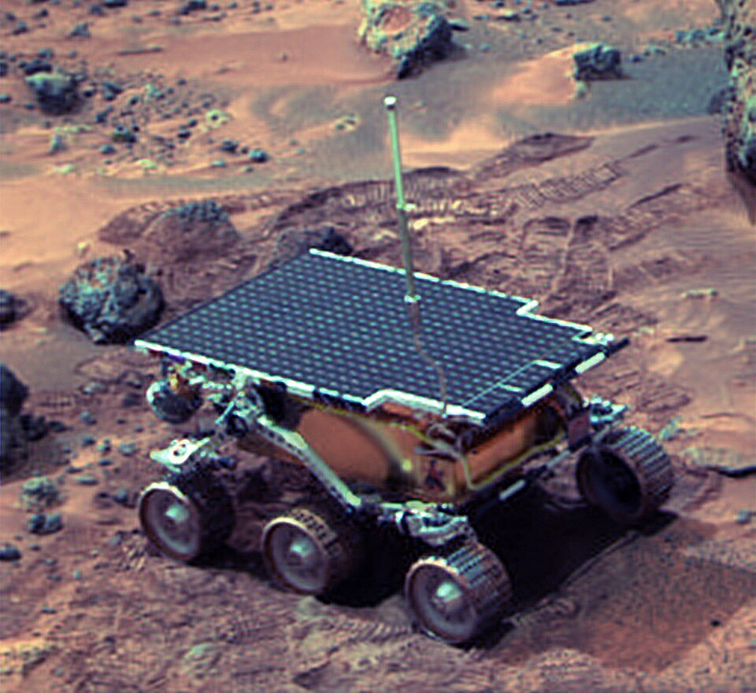
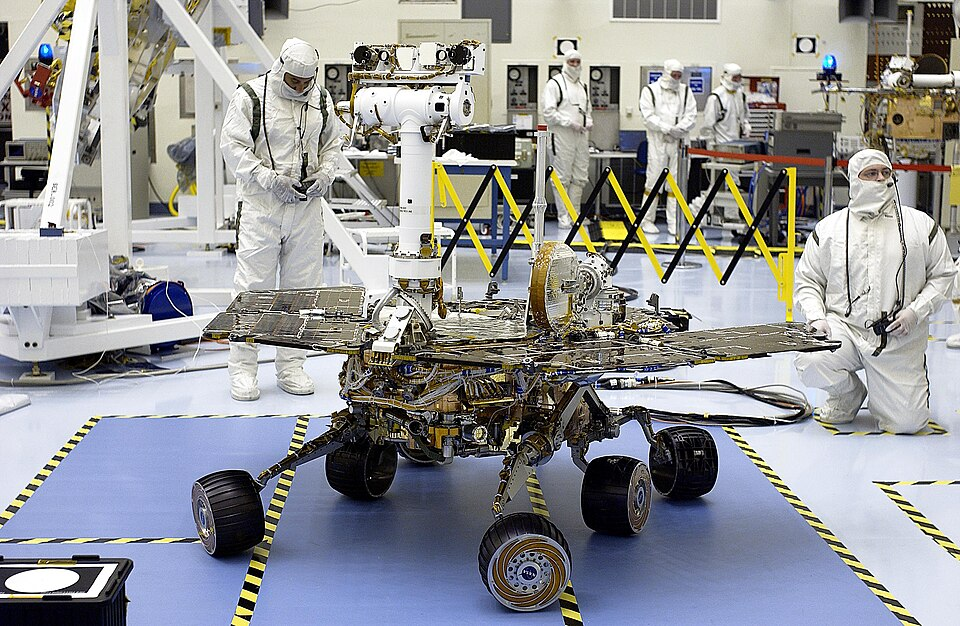
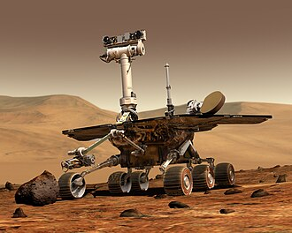

MARS ROVER
As of May 2021, there have been six successful robotically operated Mars rovers
-
Soujurner

Soujurner was the first to land on Mars as part of the Mars Pathfinder project. It landed on July 4th 1997, and lasted for about 100 meters, before it lost communications with earth. Its last signal was recieved the morning of October 7, 1997
-
Spirit

Spirit landed on January, 4 2004, three weeks before its twin Opportunity. Spirit got stuck in a "sand trap" in late 2009 at an angle that hampered recharging of its batteries; its last communication with Earth was on March 22, 2010.
-
Opportunity(Oppy)

Opportunity landed on Mars January 25, 2004. It's planned duration was 90 sols(Mars days), but lasted for 5,352 sols. Which is about 15 Earth years. It traveled a total distance of 45 kilometers.
-
Ryland Grace

Ryland is a former molecular biologist, now science teacher. He is the new designated science specialist after Martin DuBois died prior to take off.
-
Ryland Grace
Ryland is a former molecular biologist, now science teacher. He is the new designated science specialist after Martin DuBois died prior to take off.